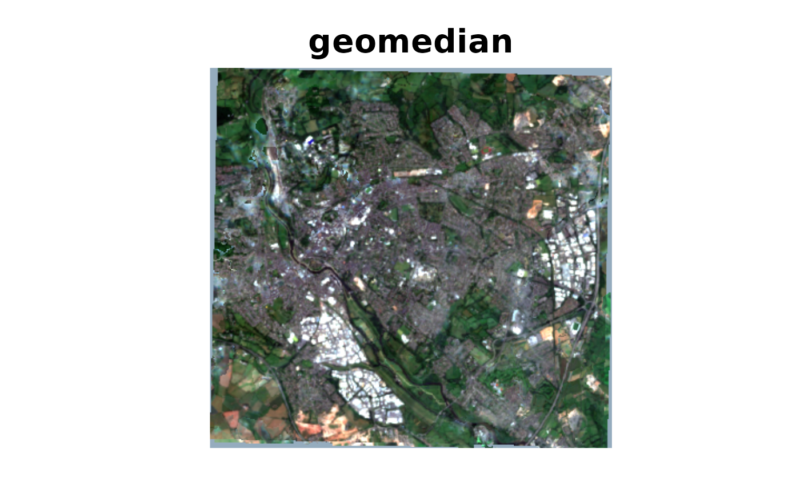
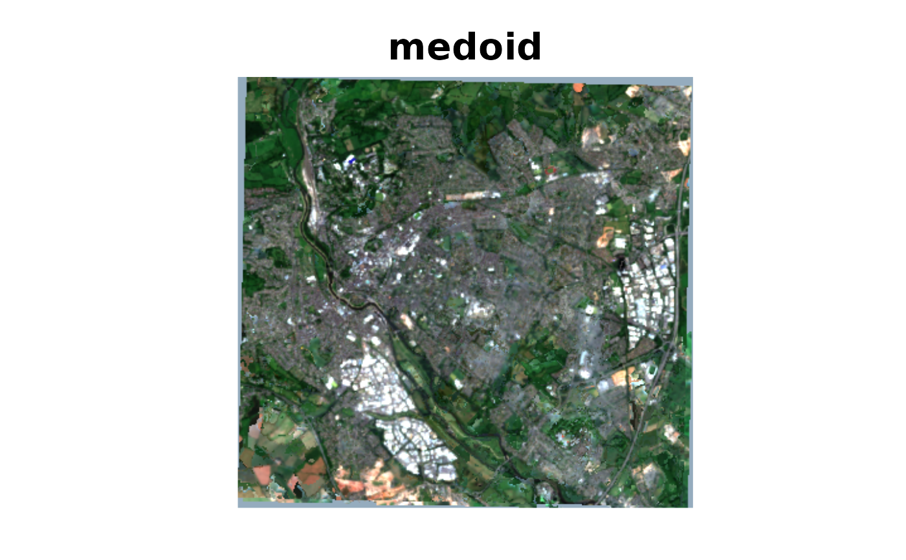
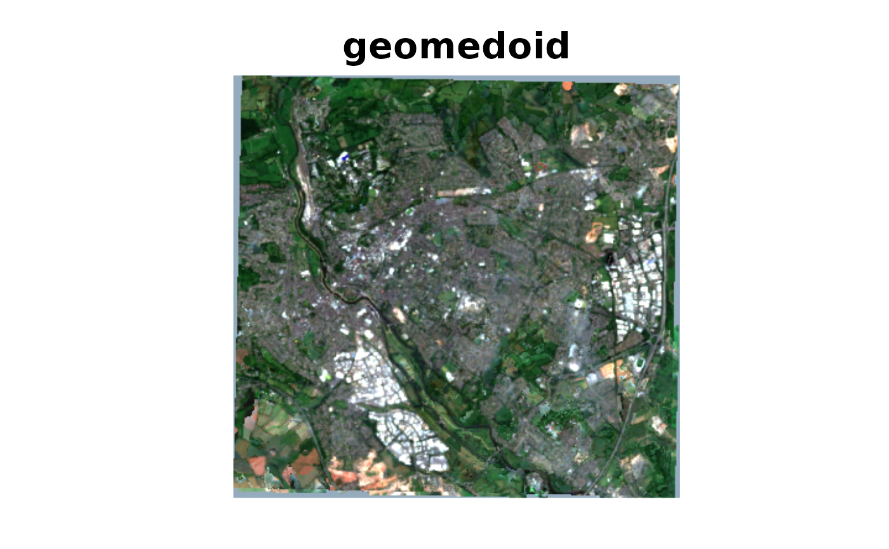
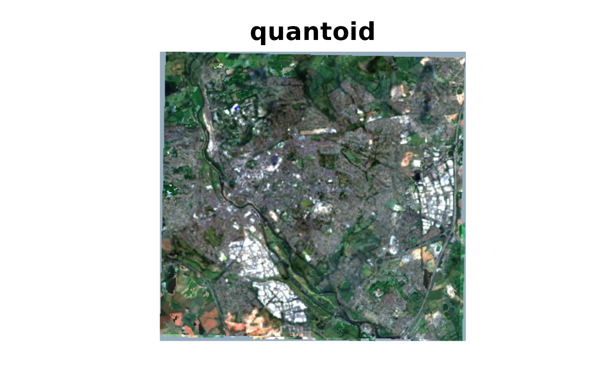

Image composite reductions that require all bands.
Source:R/multiband_reduce.R, R/multiband_reduce_funs.R
multiband_reduce.Rdmultiband_reduce can be used to create composite reductions
that require all band values, such as tyhe geometric median or medoid.
composite of a warped VRT collection.
Usage
multiband_reduce(
x,
reduce_fun,
outfile,
config_options,
creation_options,
quiet,
nsplits,
recollect
)
geomedian(
weizfeld = FALSE,
nitermax = 100,
nstart = 10,
gamma = 10,
alpha = 0.65,
epsilon = 1e-08,
impute_na = TRUE
)
medoid(
distance_type = c("euclidean", "manhattan", "minimum", "maximum", "minkowski",
"bhattacharyya", "hellinger", "kullback_leibler", "jensen_shannon", "canberra",
"chi_square", "soergel", "sorensen", "cosine", "wave_hedges", "motyka",
"harmonic_mean", "jeffries_matusita", "gower", "kulczynski", "itakura_saito"),
impute_na = TRUE
)
quantoid(
distance_type = c("euclidean", "manhattan", "minimum", "maximum", "minkowski",
"bhattacharyya", "hellinger", "kullback_leibler", "jensen_shannon", "canberra",
"chi_square", "soergel", "sorensen", "cosine", "wave_hedges", "motyka",
"harmonic_mean", "jeffries_matusita", "gower", "kulczynski", "itakura_saito"),
probability = 0.4,
impute_na = TRUE
)
geomedoid(
distance_type = c("euclidean", "manhattan", "minimum", "maximum", "minkowski",
"bhattacharyya", "hellinger", "kullback_leibler", "jensen_shannon", "canberra",
"chi_square", "soergel", "sorensen", "cosine", "wave_hedges", "motyka",
"harmonic_mean", "jeffries_matusita", "gower", "kulczynski", "itakura_saito"),
nstart = 5,
gamma = 10,
alpha = 0.65,
epsilon = 1e-08,
impute_na = TRUE
)Arguments
- x
A vrt_collection_warped object.
- reduce_fun
A function to apply to the data. This function should take a single argument, a matrix where the columns represent the bands of a cell within a raster stack and the rows represent the time series of that cell. The function should return a vector of the same length as the number of bands. See details.
- outfile
The output file path.
- config_options
A named character vector of GDAL configuration options.
- creation_options
A named character vector of GDAL creation options.
- quiet
Logical indicating whether to suppress the progress bar.
- nsplits
The number of splits to use for the tiling. If NULL, the function will automatically determine the number of splits based on the dimensions of the input data, available memory and the number of active mirai daemons. see details
- recollect
A logical indicating whether to return the output as a vrt_block or vrt_collection object. default is FALSE and the output is a character string of the output file path.
- weizfeld
Logical. If TRUE, the Weiszfeld algorithm is used to calculate the geometric median - see
Weiszfeld. If FALSE (the default), the Gmedian algorithm is used, seeGmedian. The Gmedian algorithm is faster and intrinsically handles missing values.- nitermax
Maximum number of iterations. By default set to 100. only used if
weizfeld = TRUE.- nstart
Number of times the algorithm is ran over all the data set. only used if
weizfeld = FALSE.- gamma
Value (positive) of the constant controling the descent steps see details in
Gmedian. Only used ifweizfeld = FALSE.- alpha
Rate of decrease of the descent steps (see details). Should satisfy \(1/2< alpha <= 1\). Only used if
weizfeld = FALSE.- epsilon
Numerical tolerance. By defaut set to 1e-08.
- impute_na
Logical. If TRUE, missing values are replaced with the an appropriate band-level statistic - in the case of geomedian this is only relevant when
weizfeld = TRUE- in such a case the Gmedian algorithm is used to estimate bands with NA values. For medoid the column/band median is used; forquantoidthis will be the requested quantile probabilioty of the column. If FALSE, missing values are not replaced. which may result in NA values in the output for multiple bands.- distance_type
The type of distance metric to use. See
distafor a full description of options.- probability
The probability of the quantile to use. Default is 0.4.
Details
We have a lot TODO: info on the reduce_fun options and nsplits etc...
The geomedian enables the use of Gmedian
and Weiszfeld to calculate the geometric median of a
multiband raster. When Weiszfeld is set to FALSE,
Gmedian is used. For the Gmedian algorithm,
the matrix column medians are used as initial values rather than the first
row of the matrix.
The medoid function uses dista to compute
the distance between the band-level medians and the values for each pixel. It
then selects the pixel with the minimum distance as the medoid. The returned
band pixel values are spectrally consistent and observed rather than
synthetic.
The quantoid is equivalent to the medoid but uses a specified quantile value for calculating the distances.
The geomedoid function combines the geomedian and medoid - it
first calculates the geometric median across all bands and then uses this
to determine the nearest pixel value to the geometric median. As the
geometric median has greater resilience to outliers than the band-level
median, this function may selct a medoid value that is less likely to contian
clouds or other outliers. The returned band pixel values are spectrally
consistent.
Examples
mirai::daemons(3)
#> [1] 3
s2files <- fs::dir_ls(system.file("s2-data", package = "vrtility"))
ex_collect <- vrt_collect(s2files)
t_block <- ex_collect[[1]][[1]]
# export each file with mask.
coll_masked <- ex_collect |>
vrt_set_maskfun(
mask_band = "SCL",
mask_values = c(0, 1, 2, 3, 8, 9, 10, 11)
) |>
vrt_warp(
t_srs = t_block$srs,
te = t_block$bbox,
tr = t_block$res
)
# create plots of each of the methods to compare.
par(mar = c(0, 0, 1, 0))
purrr::iwalk(
list(
geomedian = geomedian(),
medoid = medoid(),
geomedoid = geomedoid(distance_type = "manhattan"),
quantoid = quantoid(probability = 0.2)
),
\(.x, .y) {
geomed <- multiband_reduce(
coll_masked,
reduce_fun = .x
)
plot_raster_src(
geomed,
c(3, 2, 1),
axes = FALSE,
main = .y
)
}
)
#>



